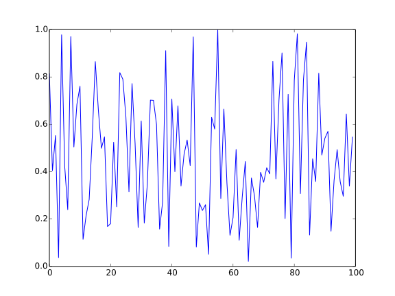

SAIGtensor Documentation
Tensor tools for seismic data processing
Test for latex
inline math $\frac{\partial^2 u}{\partial t^2}-\Delta^2 u = 0$
Here is an equation:
Include code to documentation
a = 1
b = 2
c = a+b3Include figure
using PyPlot
a = rand(100)
plot(a)
Index
SAIGtensor.KRPSAIGtensor.cp2tensorSAIGtensor.cp_gradientSAIGtensor.cpnormSAIGtensor.cpnormalize!SAIGtensor.cptLeftSAIGtensor.cptRightSAIGtensor.cptfirstSAIGtensor.fitnessSAIGtensor.formXst!SAIGtensor.formZs!SAIGtensor.initCptensorSAIGtensor.initTensorSAIGtensor.matricizationSAIGtensor.randSpl!SAIGtensor.recursiveKRPSAIGtensor.sidx2subSAIGtensor.tnormSAIGtensor.ttfSAIGtensor.ttf_slowSAIGtensor.ttvSAIGtensor.unmatricizationSAIGtensor.updateAn!